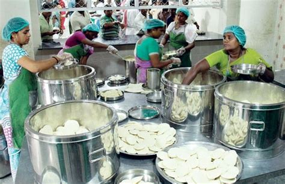

FROM OUR KITCHENA GOOD MEAL BRINGS US TOGETHER
Made with care.
Shared with joy.
At Mimiz, good food is about the little things: familiar flavours, generous portions, and a warm welcome every time. Pick something you love and let us take care of the rest.
See what’s cooking →